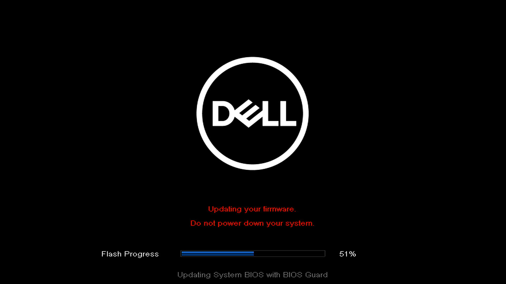
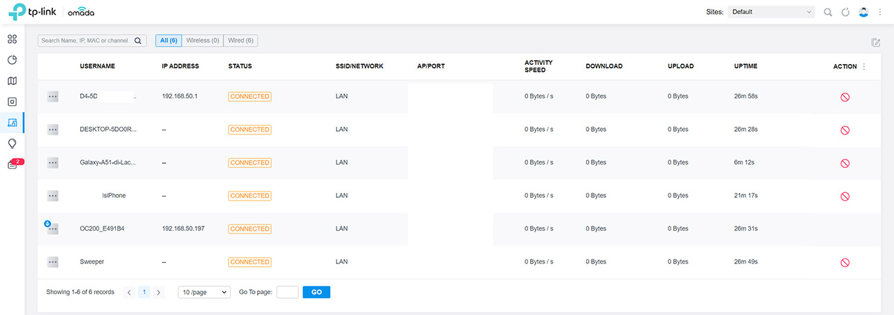

💻
System
Installation , Réinitialisation et configuration d'appareil.
PORTFOLIO
Étudiant en BTS SIO, passionné par l'informatique et les nouvelles technologies. Découvrez ici mon parcours, mes compétences, mon stage et mes projets.
BTS SIO SISR
01 — À PROPOS
Je suis actuellement étudiant en BTS Services Informatiques aux Organisations (SIO). Cette formation m'a permis de développer des compétences en informatique, en réseau et en gestion de projets.
J'ai également réalisé un stage en entreprise, qui m'a permis de découvrir le fonctionnement d'un service informatique professionnel et de mettre en pratique mes connaissances.
02 — SAVOIR-FAIRE
Installation , Réinitialisation et configuration d'appareil.
configuration et administration de systèmes et réseaux.
Documentation sur la configuration des switch et routeurs
03 — EXPÉRIENCES
St Trojan • Service informatique
L'entreprise est une association privée à but non lucratif qui aide les personnes handicapées. L'ATASH gère plusieurs bâtiments : Bourcefranc (Louvois), Saint-Just-Luzac (SAMSAH) et Corme-Royal (Domaine du Grand Pré).
J'ai effectué mon stage dans le bâtiment responsable de l'administration et de l'informatique. Mon maître de stage est le seul responsable technique pour toute l'association, avec l'aide de plusieurs prestataires.
Ville • Service informatique
Présentation ici (son activité et le service dans lequel tu as travaillé.)
04 — RÉALISATIONS
Création d'un dispositif de travail a distance afin d'avoir acces a sa session d'utilisateur dirrectement depuis chez nous.

Mise en place de session directement heberger sur un serveur et non sur le poste afin de permettre d'avoir sa session avec les fichiers enregistré dessus avec n'importe quel appareil.
05 — ACTIVITÉS & COMPÉTENCES
Voici les principales activités réalisées pendant ma formation et mon stage, ainsi que les compétences mobilisées pour chacune d'elles.
| Activité | Compétences associées |
|---|---|
|
Installation d'appareils
Mise en état et préparation des équipements pour les utilisateurs. - Installation windows et mise à jour - Configuration et mise à jour bios - Suppression de certaines application inutile |
 |
|
Remise en état des routeur wifi
Intervention pour résoudre les problèmes de routeur wifi se déconnectant au hasard dans le batiment (Centre de Réadaptation d'Oléron) ou CRO. -Ressencement des bornes wifi afin de mettre a jour leur nom et leur emplacement dans le batiment. -Réarangement des câbles des bornes aux niveaux de la baie informatique présent a l'étage -Changement de certains câble qui été défectueux |
 |
| ..... .... | |
| .... .... | |
| .... .... |
05 — CONTACT
Tu peux me contacter pour discuter de mon parcours, de mes projets ou de mes compétences.